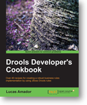

Drools Developer’s Cookbook review

A few weeks ago Packt Publishing released the Drools Developer’s Cookbook, written by Lucas Amador. I had the opportunity to review an early draft of the book last year and when I received my copy of the released book I was eager to read it and check out how was it. I am glad to say I am pleasantly surprised.
Packt is known for publishing many high quality books on open source projects and it has already published 2 other books on Drools, but managed to publish this 3rd book with a completely different perspective and as so, allows readers to choose which ones they would benefit more from.
While JBoss Drools Business Rules, by Paul Browne, focus its content on higher level rule authoring and an earlier version of Guvnor, Drools JBoss Rules 5.0 Developer’s Guide, by Michal Bali, is a deeper tutorial-style reading that builds on the examples from chapter to chapter, detailing how every piece of the puzzle fits together.
Drools Developer’s Cookbook on the other hand, as the name implies, contains recipes on how to leverage Drools’ features to effectively build business solutions. This is an excellent format for those with some knowledge of the platform and that want a detailed reference on how to use specific features. While the Developer’s Guide is more suited for a throughout reading, the cookbook is a good reference material that can be read on a chapter basis in any order the reader wishes.
Each recipe is divided in usually 3 sections:
- “Getting ready” details which setup steps are necessary to use the feature/complete the task in that recipe, like for instance, additional jar dependencies or configuration options are required.
- “How to do it…” is a step by step explanation of how to use the feature/complete the task.
- “How it works…” is my favorite section and explains how and why things work the way they do. This is important knowledge that can be leveraged to achieve different goals.
Some recipes also have references for additional documentation or information.
The book covers an extensive set of components and features, as can be seen in the table of contents: from the core Drools Expert, to Guvnor, Fusion, Planner, Camel/Spring/JPA integration and even a bit of jBPM. I think the book will be really helpful to a large percentage of the Drools user base.
Unfortunately, the book is not perfect. There are some minor issues, like some typos in some of the printed examples. The good news is that this is totally offset by the great support Packt provides to all their published books. The (fixed) source code is available for download, and I imagine the errata should be soon available as well.
The over 40 recipes in this book are an excellent resource, and I am sure it will left the readers looking forward for more!

{kind=link}